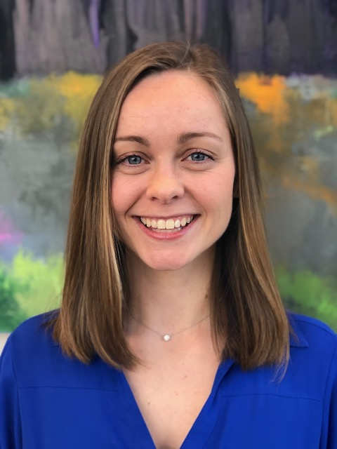

Casey joined Cartus in January of 2015 as a Real Estate Contract and Closing Specialist, and has since moved into the role of Expatriate Assignment Consultant, where she specializes in both domestic and international consulting.
Throughout her career at Cartus, Casey has approached her work with passion, and is adept at identifying opportunities to improve efficiencies to benefit the transferees’ experience with their move, and her team at large.
She curates strong relationships with her transferees and her colleagues, and has always taken initiative to take part in working groups to improve processes, as well as founding and chairing the Real Estate Services Community and Planning Committee.
Casey graduated from the University of Connecticut with a Bachelor of Arts Degree in Speech, Language, and Hearing Sciences.
Casey has a love for pottery and baking, and currently resides in Newtown, CT with her husband and their dog, Teddy.